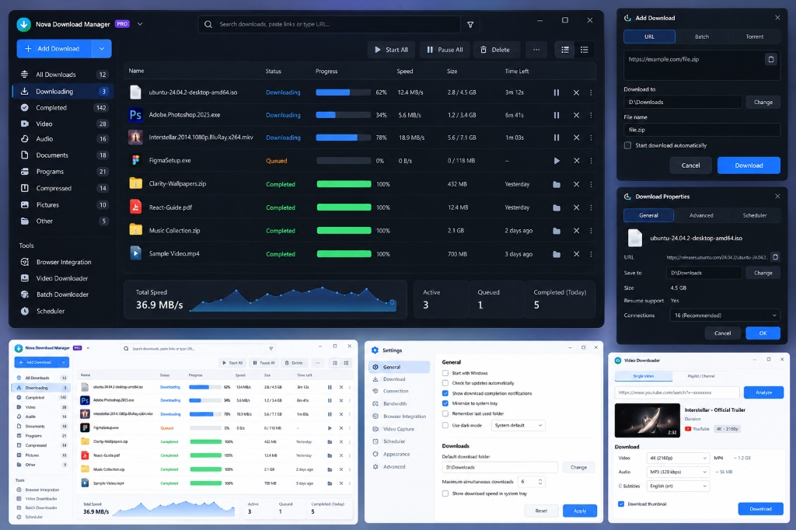
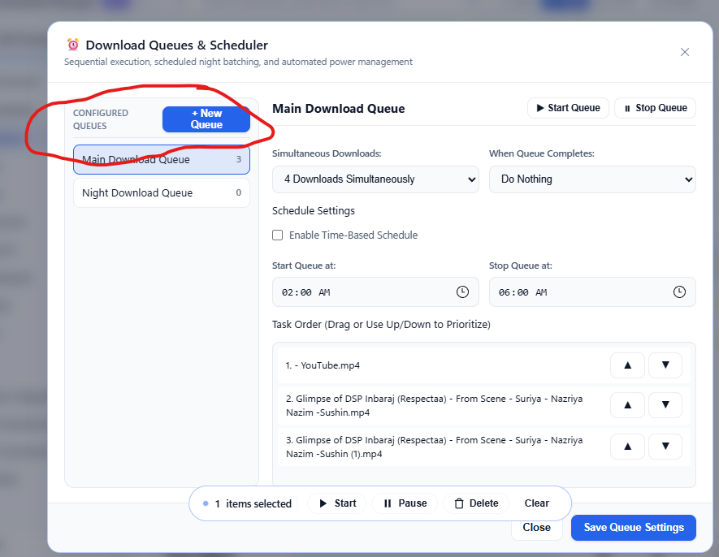
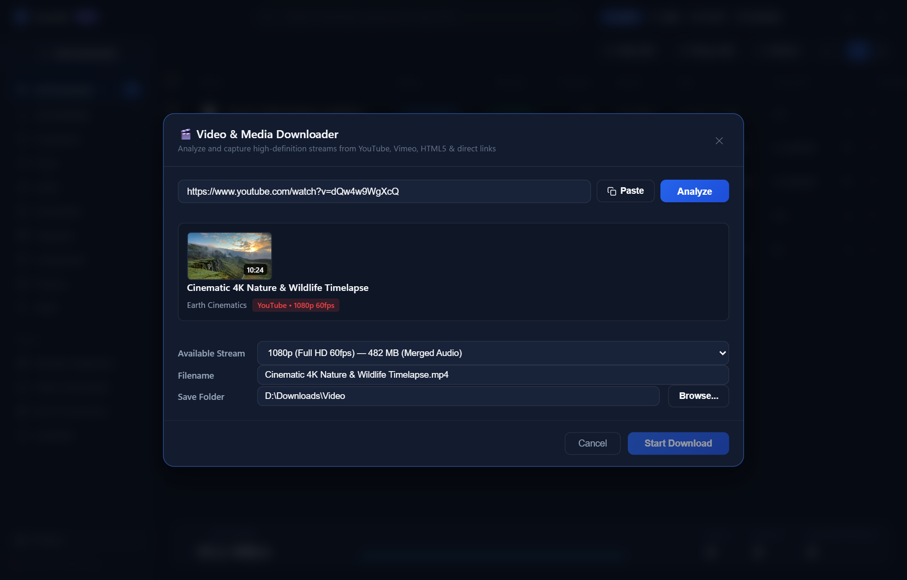
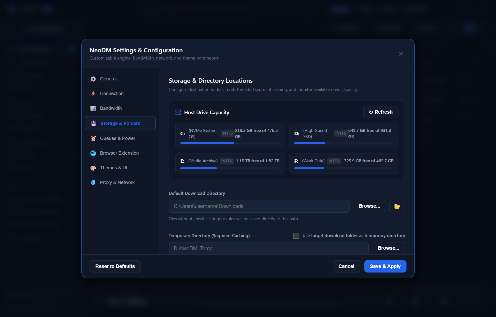
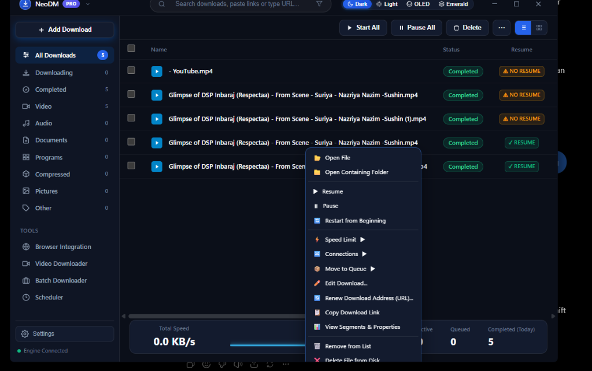
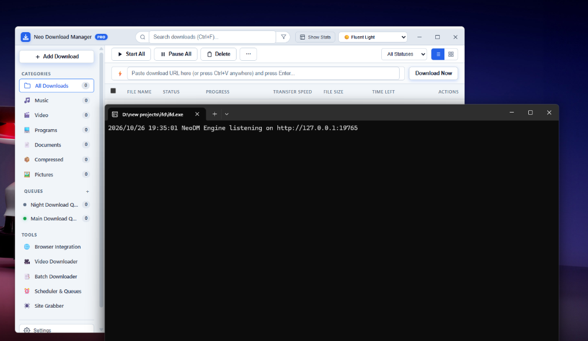

Neo Download Manager PRO (NeoDM) splits files into up to 32 dynamic streams and writes directly to disk offsets via sparse files. Assemble 100% finished downloads with 0 seconds of disk freeze.

Combining the speed of native compiled systems with the ergonomics of modern Bento design.
Unlike legacy download managers that store separate chunk files and freeze your drive assembling them, NeoDM streams straight into destination disk offsets via WriteAt. When your download hits 100%, it is already assembled and ready immediately.

Extract 1080p, 720p, or high-bitrate audio from YouTube, Vimeo, Twitch, and HTML5 video sites. Floats an ergonomic download badge directly on web players and muxes audio and video tracks into pristine MP4 containers with zero command prompt popups.

Direct Win32 API integration enumerates all mounted volumes (C: through I:), displaying live capacity meters and automatically organizing downloads into category folders.

Seamless 1-click integration with Google Chrome, Microsoft Edge, Brave, and Firefox. Includes 1-click browser launchers, native context menus ("Download Media with NeoDM"), session cookies, and authentication headers forwarding automatically.

Organize batch downloads with customizable start and stop windows. Features automatic post-completion power actions including Computer Sleep and Automated Shutdown.

Zero-footprint background docking with a native Win32 options menu (Show, Pause All, Resume All, Settings, Restart, Exit). Features clean single-instance window restoration and 1-click service restart.
A generational leap forward over legacy 90s-era download managers.
| Feature | NeoDM PRO | Internet Download Manager (IDM) | Free Download Manager (FDM) |
|---|---|---|---|
| Concurrent TCP Streams | Up to 32 Dynamic | Up to 32 Dynamic | Up to 10 Static |
Direct Offset Writing (WriteAt) |
Yes (0s disk freeze) | No (Disk concatenation pause) | Partial |
| Cold Startup Time | < 200 ms | ~ 800 ms | ~ 2.5 s |
| Memory Footprint | < 35 MB RAM | ~ 45 MB RAM | ~ 150 MB RAM |
| Modern Bento UI (Light / Dark) | Yes (Bento 2.0) | No (Legacy Win32 GUI) | Standard Web |
| Silent YouTube Muxing | Yes (Zero Terminals) | Yes | Limited |
| Dual CLI & Desktop GUI | Yes (neodm CLI) |
No | No |
| Open Source & Auditable | Yes (Pure Go) | No (Proprietary) | Open Source |
The exact same binary runs as a high-speed terminal utility or desktop app.